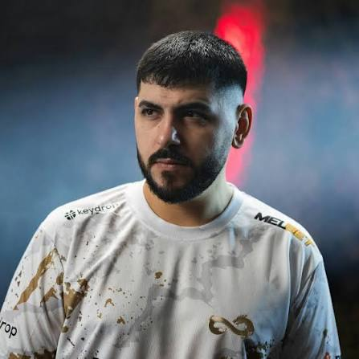

Türkiye'nin önde gelen üst düzey takımlarından Eternal Fire'ın kurucu kadrolarında yer almış ve kaptanlık yapmıştır 25 Ocak 1991 doğumlu olan Küpeli, Türkiye ve Fransa çifte vatandaşlığına sahip olup Fransa'da büyümüştür. Counter-Strike 1.6 dönemiyle 2006 yılında espor kariyerine başlamış; Cowboyz, Get2Gev, Millenium Gaming, Imaginary Gaming ve WARMAKER gibi takımlarda forma giymiştir Türk Counter-Strike sahnesinin uluslararası alandaki ilk büyük çıkışını yapan efsanevi Space Soldiers kadrosunun kaptanlığını yapmıştır